Distributions#
Normal vs Paranormal#
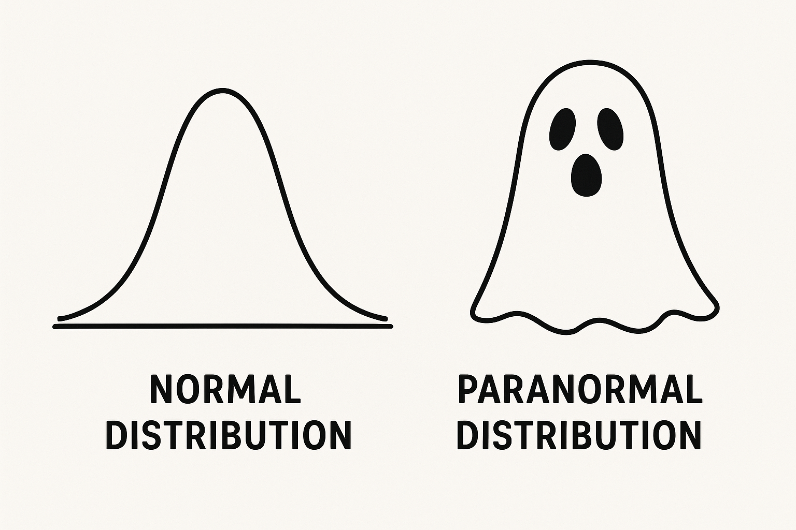
MemoStats Game#
Let’s find paired cards in the MemoStats Game !!!
you uncover a card
explain what you see
if you find the paired card, you continue to uncover cards
otherwise, a new player takes your turn
Types of Data#
Quantitative: numerical data that can be measured (e.g., height, weight, temperature)
Qualitative: categorical data that describes characteristics or qualities (e.g., colors, names, types)
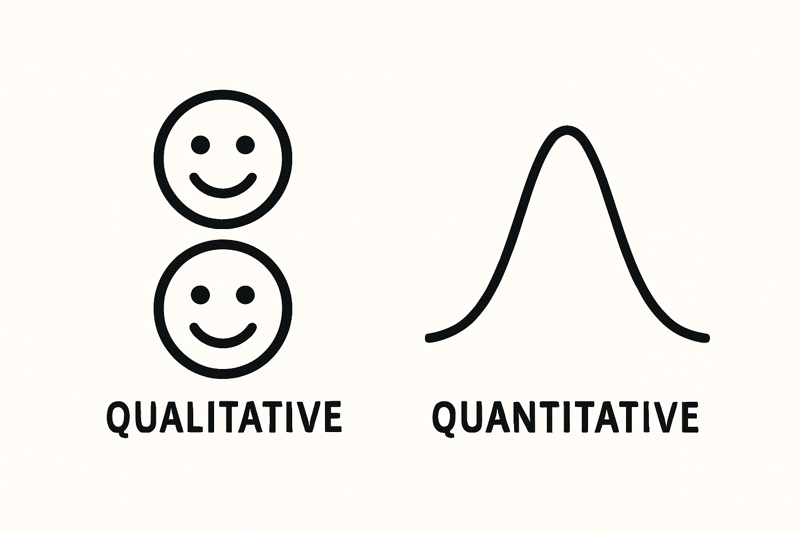
Categorical Data#
Nominal: categories without a specific order (e.g., colors, types of fruit)
Ordinal: categories with a specific order (e.g., rankings, satisfaction levels)
Distribution: often shown as a bar chart or pie chart
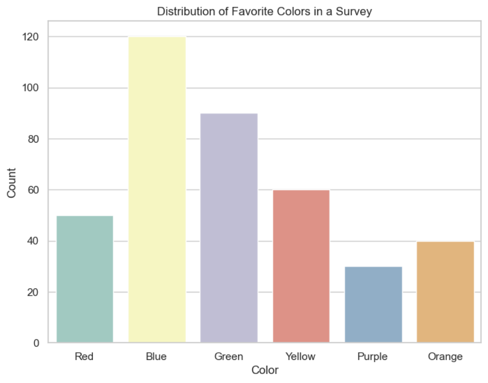
Numerical Data#
Discrete: countable data (e.g., number of students, number of cars, roll of a die)
Continuous: measurable data (e.g., height, weight, temperature)
Distribution: often shown as a barchart, histogram, probability density functions (PDFs) or line charts
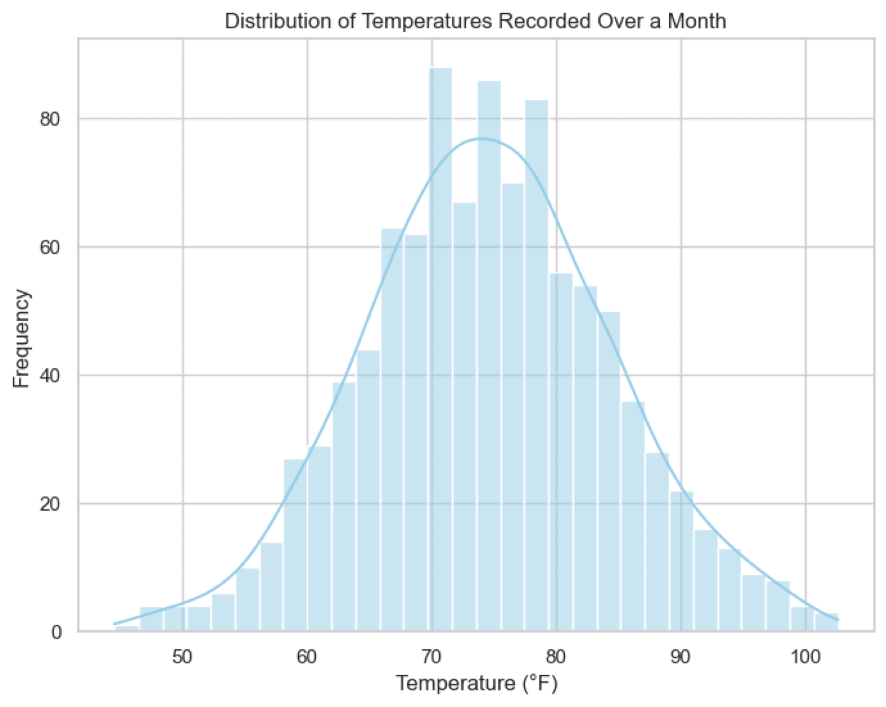
Why Data Types Matter?#
Analysis: Different data types require different statistical methods and probabilty distributions.
Visualization: Choosing the right chart or graph depends on the data type.
Intro to (Probability) Distributions#
Distribution: Shows how values in a dataset are spread out. It tells us how often each value occurs.
Probability Distribution: A mathematical function that describes the likelihood of different outcomes.
Types of Distributions:
Discrete: Used for countable outcomes (e.g., number of students in a class).
Continuous: Used for measurable outcomes (e.g., height, weight, temperature).
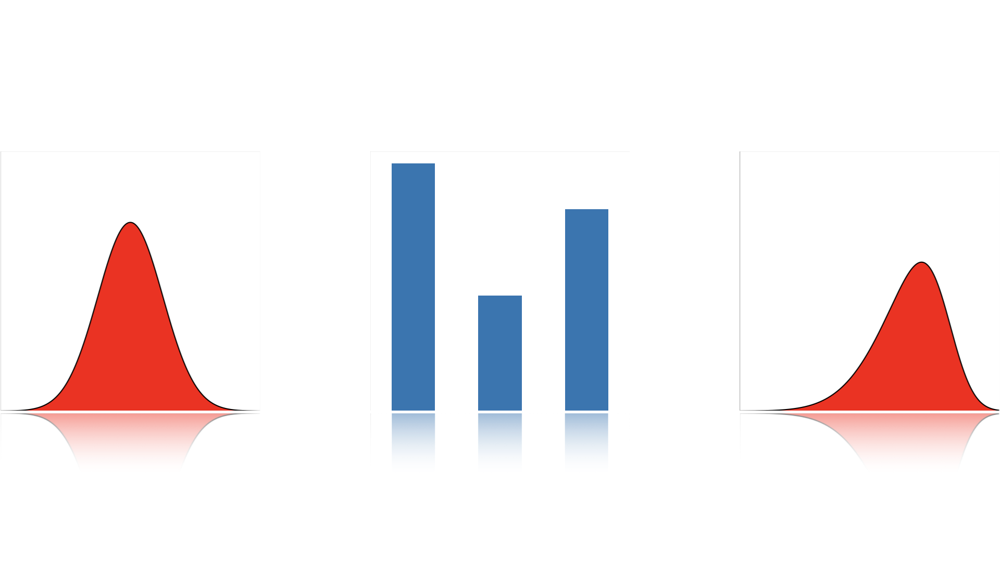
Probability Mass Function (PMF)#
It gives the probability of a specific outcome for discrete random variables.
It is defined as: $\( P(X = x) = p(x) \)$
where \(p(x)\) is the PMF of the random variable \(X\).
Example: If you roll a die 🎲, the PMF gives the probability of rolling each number (1 to 6).
PMF is often represented as a bar chart.
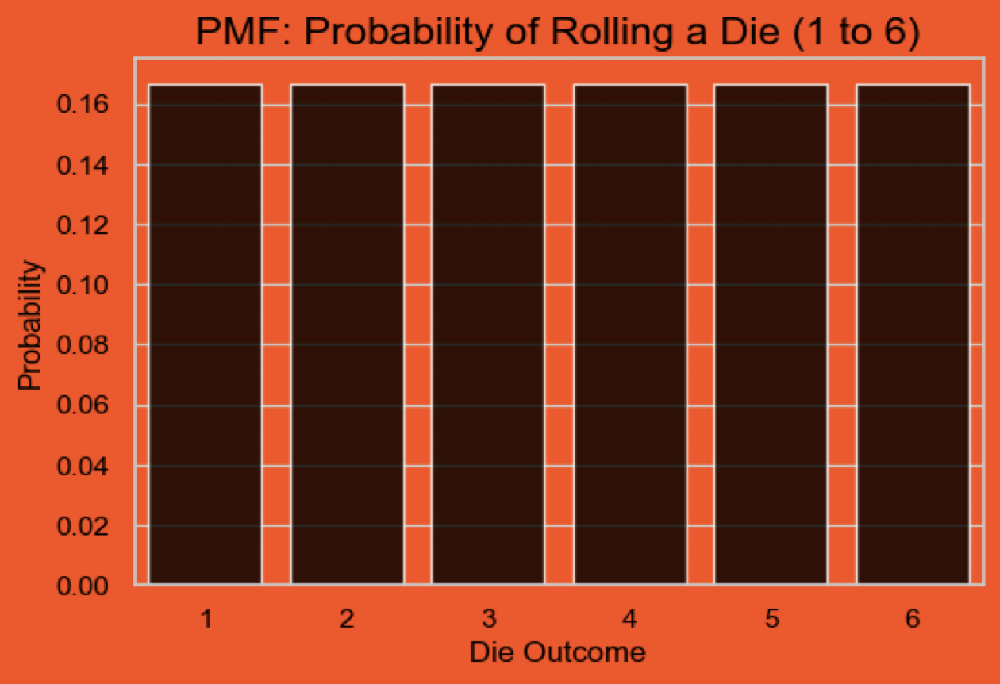
Probability Density Function (PDF)#
It describes the density of the probabilty for continuous random variables.
Probaility is represented as an area under the curve over a range of values.
It is defined as: $\( P(a < X < b) = \int_{a}^{b} f(x) \, dx \)$
where \(f(x)\) is the PDF of the random variable \(X\).
Example: What is the probability that a randomly chosen person’s height is between 160 cm and 180 cm?
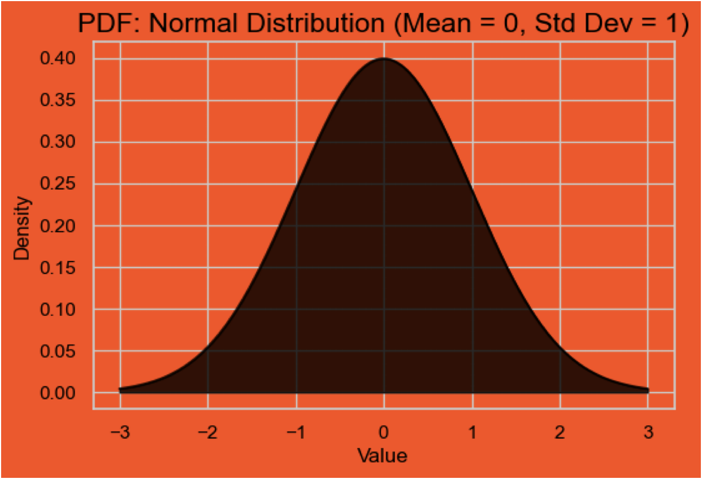
Cumulative Distribution Function (CDF)#
It gives the cumulative probability that a random variable (either discrete or continuous) \(X <= \textbf{certain value x} \)
It is defined as: $\( F(x) = P(X \leq x) \)$
where \(F(x)\) is the CDF of the random variable \(X\).
Example: What’s the probability that time between arrivals of emails is less than 5 minutes?
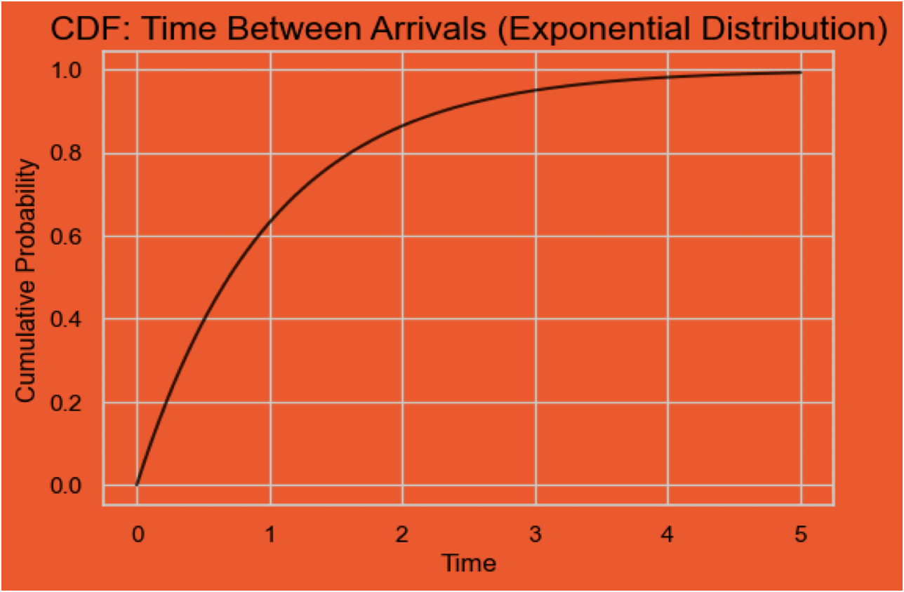
Distribution Examples#
Binomial Distribution 🪙#
It describes the number of successes in a fixed number of indipendent trials/experiments, where each trial has two possible outcomes (success or failure).
It is defined as: $\( P(X = k) = \binom{n}{k} p^k (1-p)^{n-k} \)$
where:
\(\binom{n}{k}\) is the binomial coefficient
\(n\) is the number of trials
\(k\) is the number of successes
\(p\) is the probability of success in each trial (0.5 for a fair coin)
Example: Flipping a coin 10 times and counting how many times it lands on heads (success).
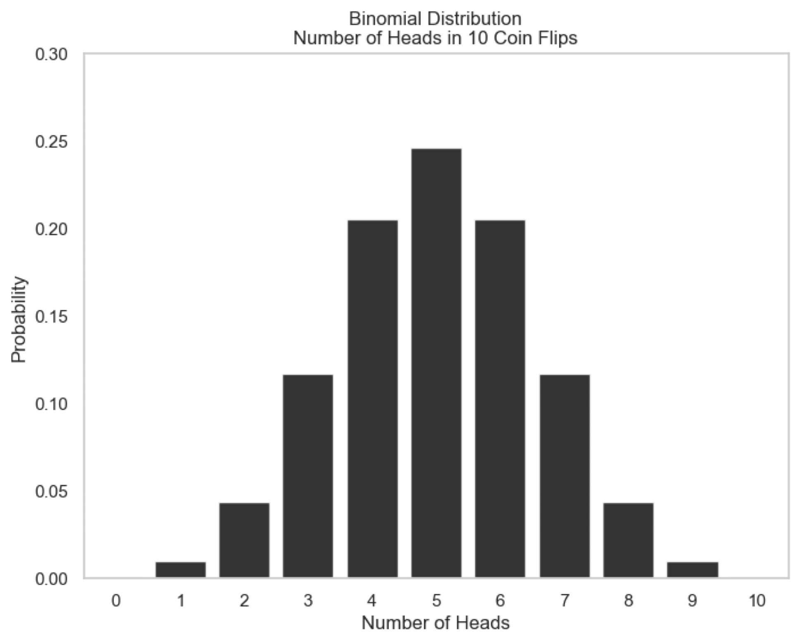
Poisson Distribution 📧#
It describes the number of events that occur within a fixed interval of time or space, given that events happen independently and at a constant average rate.
It is defined as: $\( P(X = k) = \frac{\lambda^k e^{-\lambda}}{k!} \)$
where:
\(\lambda\) is the average rate of events in the interval
\(k\) is the number of events
\(!\) is the factorial function
Example: The number of emails received in an hour, where the average rate is 5 emails per hour.
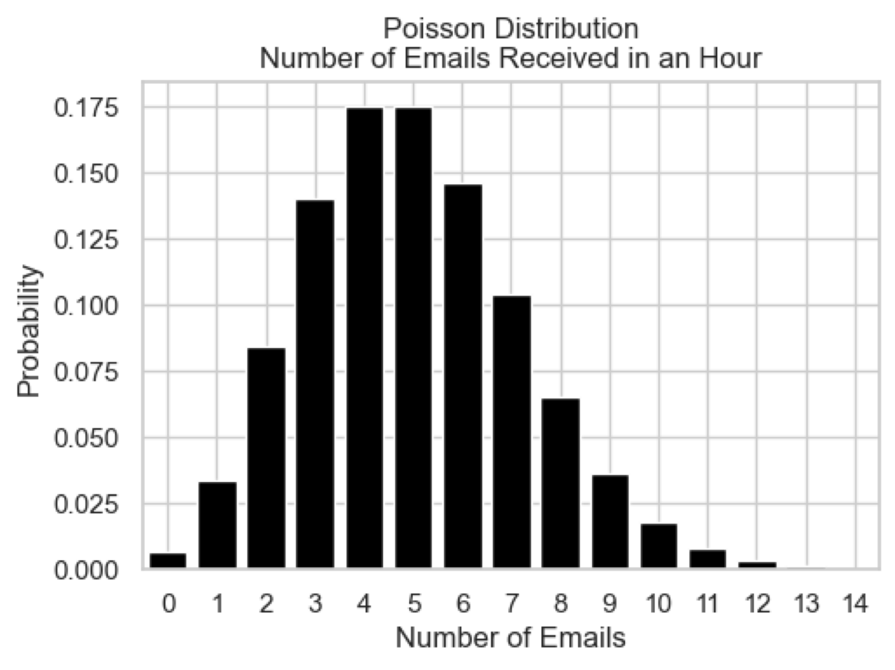
Uniform Distribution 🎲#
It describes a situation where all outcomes are equally likely within a range.
It is defined as: $\( P(X = x) = \frac{1}{b - a} \)$
where:
\(a\) is the minimum value
\(b\) is the maximum value
\(x\) is any value between \(a\) and \(b\)
Example: Rolling a fair die, where each face (1 to 6) has an equal probability of 1/6.
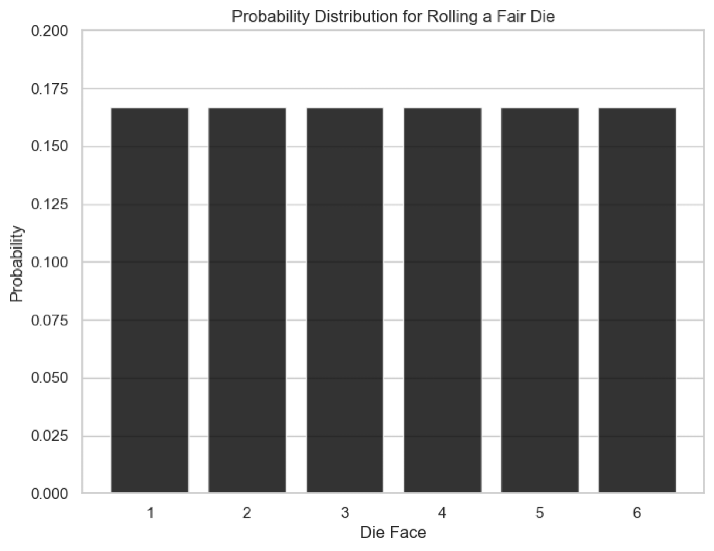
Normal Distribution 📈#
It is a bell-shaped curve where most of data points cluster around the mean, with fewer points as you move away from the mean.
It is defined as: $\( f(x) = \frac{1}{\sigma \sqrt{2\pi}} e^{-\frac{(x - \mu)^2}{2\sigma^2}} \)$
where:
\(\mu\) is the mean (average)
\(\sigma\) is the standard deviation (spread of the data)
Example: Heights of people in a population, IQ scores, or errors.
Applications: foundation for many statistical methods, including hypothesis testing and confidence intervals.
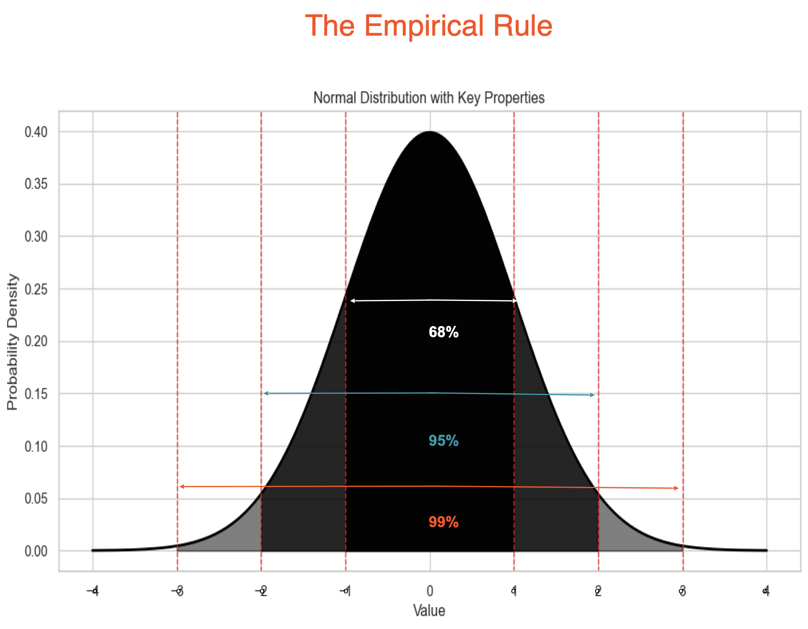
Why Distributions matter?#
Help us understand the underlying patterns in data.
Help us in identifying outliers and anomalies.
Guide us in selecting appropriate statistical methods for analysis, modeling
Confidence Intervals#
What is a Confidence Interval?#
Example: Height#
Let’s say you’re estimating the average height of adult women in a city based on a sample, and you compute:
We are 95% confident that the true average height of all adult women in that city is between 162 cm and 168 cm.
✅ What it does mean:
If we repeated this sampling process many times, and built a 95% CI from each sample:
About 95% of those intervals would contain the true population parameter.
The interval reflects the precision of our estimate — wider means more uncertainty; narrower means more precise.
❌ What it does NOT mean:
It does not mean there’s a 95% chance the true value is inside this specific interval — the true value is fixed; the interval is random.
It’s about long-run performance of the method, not a probability about this one interval.
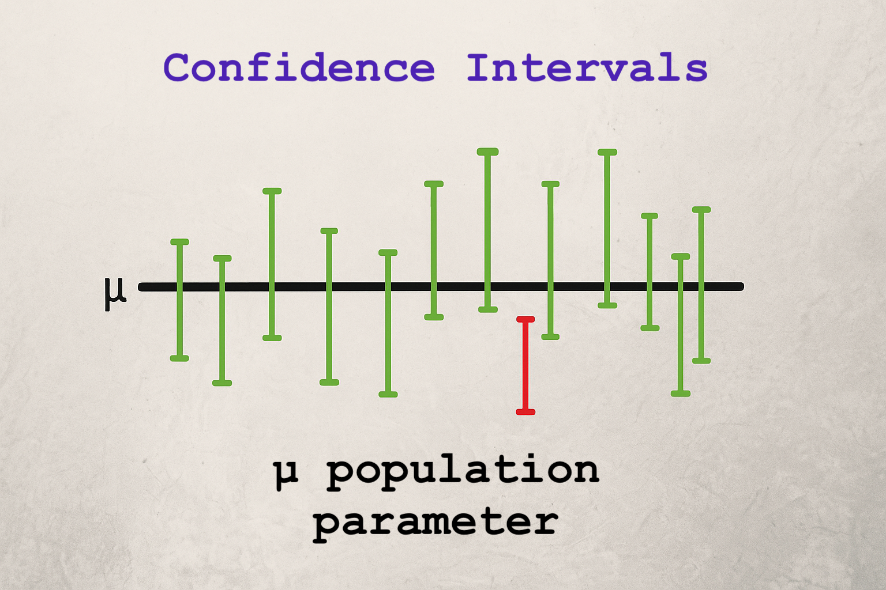
How can we define this range of values?#
A CI is tipically defined as: $\( \text{CI} = \text{Point Estimate} \pm \text{Margin of Error} \)$
Point Estimate: sample statistic (e.g., sample mean, sample proportion)
Margin of Error (MoE): quantifies the uncertainty in the estimate, how much we expect the sample statistic to be off from the true population parameter.
Methods to Calculate Margin of Error (MoE)#
1. Z-Score Method for the Mean
MoE = z* × (σ / √n)
Use when:
- Population standard deviation (σ) is known.
- Sample size (n) is large (n ≥ 30).
Critical value z*:
- From the standard normal distribution for the desired confidence level (e.g., 1.96 for 95% confidence).
2. T-Score Method for the Mean
MoE = t* × (s / √n)
Use when:
- Population standard deviation (σ) is unknown.
- Sample size (n) is small (n < 30).
Use sample standard deviation (s)
Critical value t*:
- From the t-distribution for the desired confidence level and degrees of freedom (df = n - 1).
Z vs T Critical Values Comparison Table
| Confidence Level | Z-Score (z*) | T-Score (df = 15) |
|---|---|---|
| 90% | 1.645 | 1.753 |
| 95% | 1.960 | 2.131 |
| 99% | 2.576 | 2.947 |
Bootstrapping for calculating CI:#
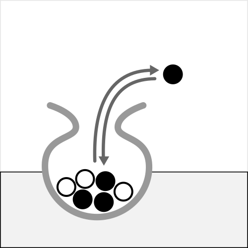
Getting Bootstraps#
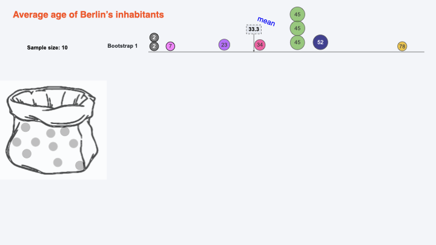
Bootstrap 2#
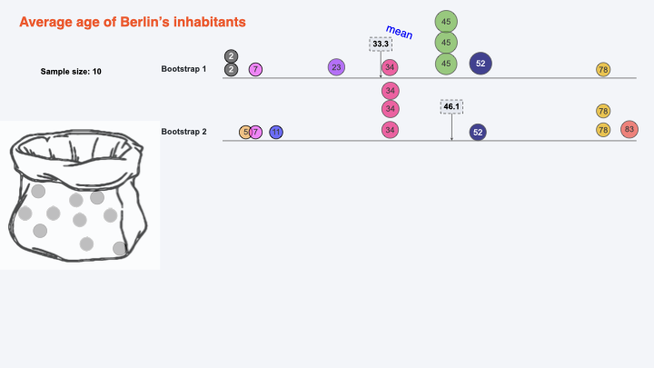
Bootstrap 3#
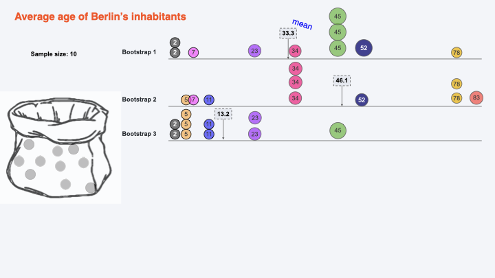
Bootstrap n#
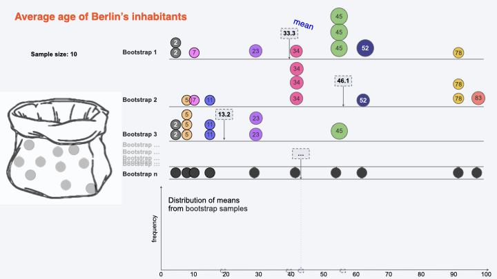
Collecting Bootstraps Means#
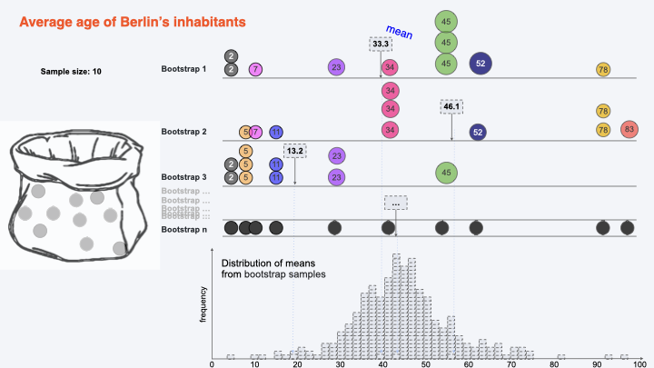
Constructing Confidence Interval#
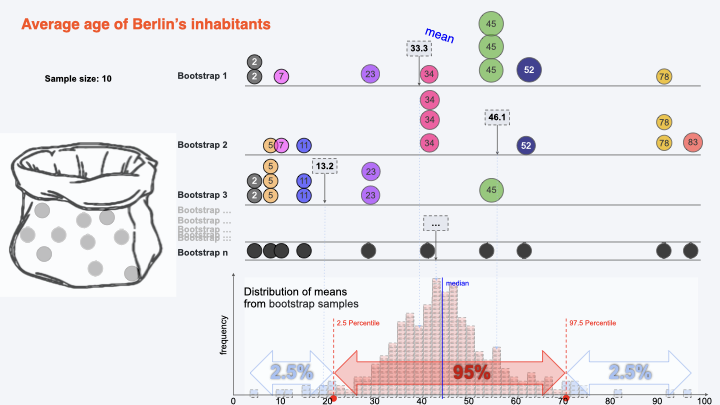